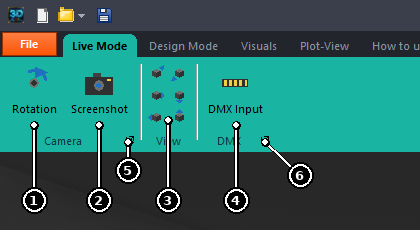
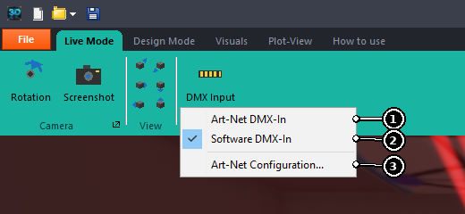
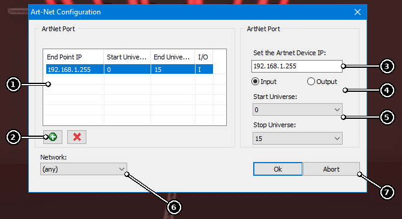

For: FullPlayer
Live Mode is for watching: the 3D view shows the light as it comes, and the ribbon has only what is needed while a show plays.

| 1 | Rotation - the camera keeps turning round the stage by itself. Press it again to stop. |
| 2 | Screenshot - saves what the 3D view shows now, as JPEG (the default) or bitmap. It asks where. |
| 3 | View - six small buttons that put the camera straight in front of the stage, behind it, left, right, above or below: Back, Right, Left, Front, Bottom, Top. |
| 4 | DMX Input - where the light comes from (see below). |
| 5 | The small corner button of Camera: the Camera Rotation window - the speed and the direction of the automatic rotation. |
| 6 | The small corner button of DMX: the DMX-Input window - the 512 channels of a universe (1 to 16) with the values that come in now. Good for checking that the light arrives. |
| left drag | Turns the camera round the stage. |
| right drag | Moves the picture. |
| wheel | Brings the camera nearer or further. |

| 1 | Art-Net DMX-In - the light comes over the network, as Art-Net (UDP port 6454): from LumiDMX on another computer, a console or a media server such as Madrix. |
| 2 | Software DMX-In - the light comes from LumiDMX Remake (or the original LumiDMX) on this computer. This is the usual choice, ticked at the start. |
| 3 | Art-Net Configuration... - which Art-Net universes are read (see below). |
Both can be ticked together. Then, for every channel, the highest value of the two wins (HTP).

| 1 | The list of Art-Net sources: the IP of the device, the first and the last universe, I (input) or O (output). |
| 2 | Adds the source written on the right to the list (green) or deletes the one selected (red X). |
| 3 | Set the Artnet Device IP - the IP of the device that sends. 192.168.1.255 (the address that ends in 255) takes what is sent to the whole network. |
| 4 | Input / Output - Input for the 3D: it receives. |
| 5 | Start Universe / Stop Universe - the Art-Net universes that are read. The first one becomes universe 1 of the 3D, and so on, 16 at most. |
| 6 | Network - the network card to listen on; (any) listens on all of them. |
| 7 | Ok keeps the changes, Abort leaves everything as it was. |
If the 3D shows nothing over Art-Net: check that the sender and this computer are in the same network (the first three numbers of the IP are the same), that the firewall lets the 3D receive, and that the universes match.